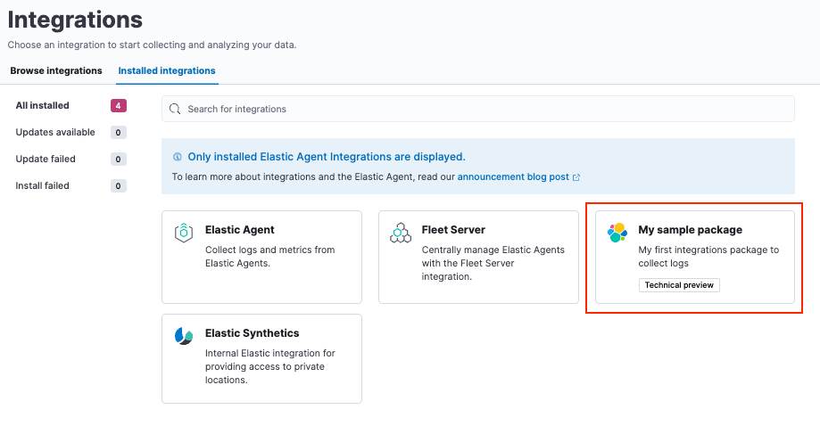
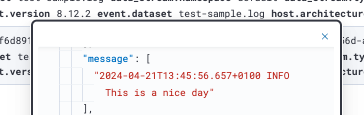

Quick start: Sample integration
editQuick start: Sample integrationedit
This quick start is designed for users familiar with the Elastic Stack. If you’re new to Elastic, Build an integration provides an in-depth look at creating a new integration.
This is a quick guide on how you can build your own integration package and upload it to Kibana.
Follow these steps to create an integration package named sample and then add a logs dataset. The same procedure can be used for a metrics dataset, however for your first integration package logs is a bit simpler because a custom input is not required.
Prerequisitesedit
You’ll need to have a few requirements in place to run this tutorial:
- elastic-package installed on your machine. This is a command line tool, written in Go, used for developing Elastic packages. It can help you lint, format, test, build, and promote your packages. Setup instructions can be found in the elastic-package repository readme.
- A GitHub repository where you can upload your integration package.
- Docker set up and running on your machine.
Step 1: Create the packageedit
-
To start, from inside a Git repository, run the
elastic-package create packagecommand. This will launch a wizard that will prompt you for some details, and will then build an empty package with all the necessary parts:elastic-package create package
-
Respond to prompts as follows:
-
Package type:
integration -
Package name:
sample -
Version:
0.0.1 -
License:
Elastic-2.0 -
Package title:
My sample package -
Description:
My first integrations package to collect logs -
Categories:
custom -
Kibana version constraint:
^8.12.2 -
Required Elastic subscription:
basic -
Github owner:
<your github name> -
Owner type:
elastic
-
Package type:
- After entering the details, the command should return a confirmation that your package has been created.
-
Change into the new
samplepackage directory.cd sample
-
Validate that the new integration package was created correctly.
-
Check the linting rules for the package
elastic-package lint
-
Format the package to fix linting
elastic-package format
-
Build a
.zipfile out of the package assetselastic-package build
-
If you prefer, you can also run the three previous commands as a single batch:
elastic-package check
-
Step 2: Upload the package to Kibanaedit
-
To test that your package can be installed into Kibana, a cluster needs to spin up. For this step you to have a running Docker setup. Run the following command:
elastic-package stack up --version=8.12.2 -v
This spins up a cluster with the version 8.12.2 of the Elastic Stack. The cluster can be accessed in your browser at https://localhost:5601 with username
elasticand passwordchangeme.-
If you want to update to the latest Elastic Stack version, run
elastic-package stack update --version=8.12.2 -v. -
You can also install the package directly into an existing cluster for testing. Steps and customization options for the
installcommand are described in this How To guide in theelastic-packagerepository.
-
If you want to update to the latest Elastic Stack version, run
-
After the cluster has finished setting up, open a second terminal window and run the following command to install your package:
elastic-package install
-
After the command runs, check that your new package appears in Kibana under Management > Integrations > Installed integrations.

Step 3: Create a datasetedit
You’ve now built an integration package, but it does not contain any assets. For the goal of starting to collect logs, you need to create a dataset, and for it the Elasticsearch mappings and ingest pipelines. If you want to be able to collect data through a managed Elastic Agent, you also need to add an agent policy template.
-
Create a new dataset:
elastic-package create data-stream
-
When prompted, provide the following details:
- Data stream name: log
- Data stream title: My log lines
-
Type: logs
The command creates the required data in the
/data_stream/logdirectory. If you picklogas data stream name, the dataset is calledsample.logand the final data stream created will belogs-sample.log-defaultas an example.
-
To not have to worry about mappings, you can pull in all Elastic Common Schema (ECS) fields. To do this, create the file
_dev/build/build.ymlunder the root directory and add the following content:dependencies: ecs: reference: git@v8.6.0 import_mappings: true -
It’s always a good idea to re-check to make sure that your package still builds and works as expected.
elastic-package check
-
Re-install your package.
elastic-package install
This reinstalls the package and create mapping templates for
logs-sample.log-*. You can also add your own mappings underdata_stream/log/fields/fields.ymlif needed.
Step 4: Add processingedit
You can now already ship log files to logs-sample.log-default but no processing will happen. So, let’s create a sample log file.
-
Create a file
test-sample.logwith the following contents, and save it anywhere on your local machine.2024-04-21T13:44:56.657+0100 INFO Hello world 2024-04-21T13:45:56.657+0100 INFO This is a nice day 2024-04-21T13:46:56.657+0100 INFO I am working on stuff
Each line of the log file will be shipped by Elastic Agent as a document with the message field containing the log line. You will set up the dissect processor to take the log line apart into
@timestamp,log.level, andmessage. -
Next, test your ingest pipeline. In Kibana navigate to Management > Dev Tools and run the Simulate pipeline API:
POST /_ingest/pipeline/_simulate { "pipeline" : { "description": "logs-sample.log", "processors": [ { "dissect" : { "field" : "message", "pattern" : "%{@timestamp} %{log.level} %{message}" } } ] }, "docs": [ { "_index": "index", "_id": "id", "_source": { "message": "2023-02-21T13:46:56.657+0100 INFO I am working on stuff" } } ] }This returns:
{ "docs": [ { "doc": { "_index": "index", "_version": "-3", "_id": "id", "_source": { "@timestamp": "2023-02-21T13:46:56.657+0100", "message": "I am working on stuff", "log": { "level": "INFO" } }, "_ingest": { "timestamp": "2024-04-30T17:51:22.16442471Z" } } } ] } -
Now that you’ve confirmed that the ingest pipeline is working, add it to your dataset by modifying
data_stream/log/elasticsearch/ingest_pipline/default.ymlto:description: Pipeline for processing sample logs processors: - dissect: field: message pattern: "%{@timestamp} %{log.level} %{message}" on_failure: - set: field: error.message value: '{{ _ingest.on_failure_message }}' -
Now run
elastic-package checkagain and then re-upload the package withelastic-package install. This installs your new ingest pipeline. -
Do a quick test run to test the new pipeline. In the Dev tools console, run:
POST logs-sample.log-default/_doc { "message": "2023-02-21T13:46:56.657+0100 INFO I am working on stuff" }The response is:
{ "_index": ".ds-logs-sample.log-default-2024.04.30-000001", "_id": "BsUtMI8BQEniT9Md_TYh", "_version": 1, "result": "created", "_shards": { "total": 2, "successful": 1, "failed": 0 }, "_seq_no": 0, "_primary_term": 1 } -
Now run:
GET logs-sample.log-default/_search
The response is:
{ "took": 1, "timed_out": false, "_shards": { "total": 1, "successful": 1, "skipped": 0, "failed": 0 }, "hits": { "total": { "value": 1, "relation": "eq" }, "max_score": 1, "hits": [ { "_index": ".ds-logs-sample.log-default-2024.04.30-000001", "_id": "BsUtMI8BQEniT9Md_TYh", "_score": 1, "_source": { "@timestamp": "2023-02-21T13:46:56.657+0100", "message": "I am working on stuff", "event": { "agent_id_status": "missing", "ingested": "2024-04-30T18:04:31Z" }, "log": { "level": "INFO" } } } ] } }
Now that you can see the dissected message documented, you’re ready to ingest data.
Step 5: Release a new versionedit
-
Since your initial
0.0.1version of the package, many modifications have been made. To build a new package version, open thesample/manifest.ymlfile and change the package version to0.2.0:format_version: 3.1.3 name: sample title: "My sample package" version: 0.2.0
-
You also need to add an entry to your
sample/changelog.ymlfile. Make sure to add the new entry at the top of the file:- version: "0.2.0" changes: - description: Added sample log processing pipeline type: enhancement link: http://fake-linkYou can also update the changelog file automatically using the
elastic-package changelogcommand. -
Run
elastic-package checkagain and then theelastic-package installcommand.The
0.1.0version of the package is updated to version0.2.0. Only one version of a package can be installed at a time, but, following these steps, different versions of a package can be rolled out over time.
When developing integrations the following versioning guidelines should be used:
- Patch release (x.y.Z): For backward-compatible bug fixes
- Minor release (x.Y.z): For backward-compatible new features
- Major release (X.y.z): For changes that break backward compatibility
Step 6: Ingest dataedit
There are two different ways that you can ingest data, using either standalone Elastic Agent or Elastic Agent managed by Fleet. For this example, you can use standalone Elastic Agent since that won’t require any additional changes to the integration package.
To run these steps using Fleet-managed Elastic Agent, you just need to update the files data_stream/log/agent/stream/stream.yml.hbs and data_stream/log/manifest.yml to provide the correct configuration, which you can find in the Fleet UI.
- Download the Elastic Agent install package to your machine.
-
Download the Elastic Agent package, extract it, and change into the package directory. You can find the steps for each available platform in Install standalone Elastic Agents.
You can also download a package directly from the Elastic Agent download site.
-
In the Elastic Agent package directory, open the
elastic-agent.ymlconfiguration file for editing. -
Replace the contents of
elastic-agent.ymlwith the following:inputs: - type: logfile streams: - data_stream: # This must be aligned with the dataset name given dataset: test-sample.log paths: # Path to your log file - /<PATH-TO-LOG-FILE>/test-sample.log outputs: default: type: elasticsearch hosts: ["https://127.0.0.1:9200"] username: "elastic" password: "changeme" ssl.verification_mode: noneWhere:
-
datasetis set to match thetest-sample.logfile that you created. -
<PATH-TO-LOG-FILE> is the full path the
test-sample.logfile that you created.
-
-
Run Elastic Agent:
sudo ./elastic-agent -e
This will pick up the log file, ship it to Elasticsearch, and process it with the ingest pipeline.
-
Confirm that your log file is being ingested as expected:
- In Kibana, open Discover.
-
In the search field, enter
log.file.path.text : *. The search should return a couple of log entries. -
Hover over an entry and click
Enterto view the cell contents.
What’s next?edit
You now have your own integration package that you can update with new features and ship to an Elastic Stack or share with others.
In the integrations Contributing Guide you can find instructions for adding additional assets to your integrations, such as Kibana dashboards.
Let others know about your new integration:
- Promote your Integration with Elastic in the Elastic Community.
- Register on Elastic’s Partner Portal as a Technology Partner.